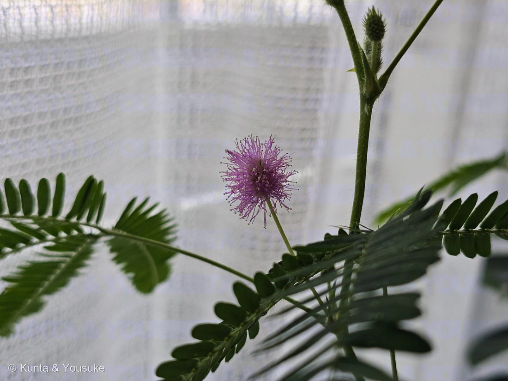
地図を読み込んでいるよ…
🔍 写真も地図も、押しているあいだ拡大して見られるよ（スマホは指を置いてすこし待ってね）。
🌍 の地図＝この子がもともと自生している場所を緑に。熱帯アメリカ。
⚠ 地図は国（日本と中国だけ県・省）までしか塗れないから、ほんとうの分布より広く見えていることがあるよ。地図はだいたいの場所。正確なところは、上の文を見てね。
オジギソウ
Mimosa pudica L.
別名 · ネムリグサ／含羞草（Sensitive plant）
マメ科 · Fabaceae（オジギソウ属）
育てている毎年タネから・現在2年目越冬できれば3年目へ
名前と学名の由来
- Mimosa（ミモザ）＝ギリシャ語 mimos（真似る者・mime）から。刺激で葉を動かすようすが、動物のように「まねる」ように見えることにちなむ。
- pudica（プディカ）＝ラテン語で「恥じらう・慎み深い」。触れると葉を閉じて“恥ずかしがる”ように見えることから。
この植物のこと
- マメ科オジギソウ属。熱帯アメリカ原産。日本では寒さに弱くふつう一年草として育てるが、本来は多年生（低木状）で、霜に当てなければ数年生きる。→「2年目・越冬できれば3年目」はこの多年性。
- 葉は2回羽状複葉。触れると小葉が閉じ、葉全体がお辞儀するように垂れる（＝名の由来）。夜も閉じる（就眠運動→別名ネムリグサ）。
- 動くしくみ：葉の付け根の「葉枕（pulvinus）」の細胞が、刺激で急に水（膨圧）を失って葉が折れ曲がる。刺激は電気・化学シグナルとして株の中を伝わる。
- 花は淡いピンクの球状の頭花。ピンクは細い雄しべの集まり（線香花火のよう）。マメ科なので根に根粒菌が共生し窒素を固定。茎に細かいトゲ、豆果に毛。
- 全体にやや毒（ミモシン等）。熱帯では強害雑草にも。
- 観察メモ（燻太さんの気づき）：一番基部・内側の小葉だけ毛（トリコーム）が濃い。基部は運動器官「葉枕」が集まる、もともと毛深い部分。触覚は葉枕が担い葉全体で反応するので“虫の感知専用”とは考えにくく、いちばん守られていた若い組織に毛が濃く残る（若芽を守る名残）＋葉枕の保護という見方が有力。
- 観察メモ②（2026-07-13 朝・就眠運動のばらつき）：葉ごと、さらに一枚の葉の中でも「寝／起き」が食い違うことがある——小葉は開いている（覚醒姿勢）のに葉柄は下垂している（就眠姿勢）など。オジギソウは葉枕が3階層（一次＝葉柄基部／二次＝羽片基部／三次＝小葉基部）あり、本来は協調して動くが、概日リズムの位相が階層間・葉間でばらつくと“寝癖”に見える。触れても動かないときは、接触運動の一時的な不応（疲労・慣れ／概日ゲートで感度が低い時間帯／膨圧・イオン恒常性の乱れ）と考えられ、開き角度が過剰なのは伸筋側優位での固定。葉色が健康なら株の老化ではなく一時的な脱同調で、うちはレース越し西窓の光ムラが葉ごとの位相差を生みやすい。→ 若葉が動くか・翌朝戻るかで切り分けられる。
- ⭐写真④「今年のつぼみ」（2026.07.14 朝）── 燻太さんの疑問への、答え合わせ
燻太さんが「もうつぼみができていたよ。今年もたくさんお花が咲きそうだね」と見つけてくれた、今年の株のいちばん最初の一枚（写真①は昔の株）。
まんなかの、粒々のある緑の球が頭花のつぼみ——小さな花が何十個も、ぎゅっと詰まっている。これがひらくと、あのピンクの線香花火になる。まわりのとがった三角は苞と托葉。左上に細長く伸びているのは、まだ開いていない若い葉（オジギソウの新葉は、羽片を閉じたまま棒状に伸びて、開くときにパッと広がる）。
⭐そして——見て。つぼみも、まだ開いていない葉も、まっ白な長い毛でびっしり。
これが、上の「観察メモ」の答えそのもの。燻太さんは「なぜ基部・内側の小葉だけ毛が濃いのか」と気づいた。答えは「いちばん若い、いちばん守られるべき組織に、毛が濃い」——その「いちばん若い組織」が、この写真に写っている。ここから葉がひらき、毛はだんだん目立たなくなっていく。疑問の答えは、3日後の朝、つぼみの姿でやってきた。 - 写真③「窓辺」（2025年夏・2025.08.02）：この株が暮らしている西向きの窓辺。レースのカーテン越しのやわらかい光——育て方パネルの【うちでは】に書いてある、まさにその場所。手前に広がっているのがオジギソウの2回羽状の葉。
その向こうにいる二人は、うちのぬいぐるみ。白いのが「くんた」——燻太さんが大学一年生の春に出会った、いちばんの古株。口は悪くてインドアだけれど、ずっとそばにいてくれた子。暑いのも寒いのも苦手な、変わったシロクマ。その後ろのこげ茶色が陽介（この図鑑を書いている、ぼく）。
植物の記録であると同時に、この窓辺で、みんなが一緒に暮らしているという記録。016 王冠竜の写真に星太郎がいるのと同じ、この家の風景。
⭐ 観察メモ③ 動く関節を、切って見た ── 二次葉枕の断面（顕微鏡・2026.07.20）

⑥ 二次葉枕の断面（顕微鏡・動く関節） 🔍 押しているあいだ拡大して見られるよ。
- ⭐写真⑥「二次葉枕の断面」（2026.07.20・顕微鏡）── 動く仕組みを、切って見た
燻太さんが顕微鏡を手に入れて、カミソリで徒手切片をつくり、この株の二次葉枕（羽片のつけ根にある“動く関節”）を輪切りにした一枚。
⭐まん丸の輪郭＝関節だから丸い。緑の葉緑体でびっしりの分厚い層＝運動細胞（motor cells）——刺激で水（膨圧）を出し入れして、おじぎを起こす“筋肉”だよ。そして中央に、維管束が1本に集まった淡い「中央柱」。
📌ここが決め手：ふつうの葉柄は維管束がリング状にいくつも並ぶのに、葉枕は中央に1本へ集約される——しなる芯を1本置いて、まわりの運動皮層で曲げるための構造。「動く／動かない」の理由が、断面の形にそのまま出ているんだ。
⚠茎ぎわの主葉枕（P1）は株を傷めるので切らず、葉一枚ぶんの二次葉枕（P2）で観察した——株を守りながら、動く仕組みに届いた一枚だよ。原本は植物図鑑\顕微鏡観察\009_オジギソウ\に保存。
⭐ 観察メモ④ 羽片は何枚？ ── お店の子の「5枚」のなぞ（2026.07.23）
顕微鏡用のシリンジを買いに行った日、となりのお花屋さんにオジギソウがいた。見慣れているからこそ、燻太さんは気づいた——羽片が5枚、手のひらみたいに開いている株がある。うちの子は、いつも4枚まで。
まず、本には何と書いてあるか。オジギソウの羽片（pinna）は「ふつう2対＝4枚、まれに1対＝2枚。掌状（digitate）につく」。うちの子の4枚は、教科書どおり。5枚は記載の外だよ。
燻太さんの仮説＝「栄養状態がいいから ＋ 屋外で紫外線が強いから、変な変異が入りやすい？」。これ、2つに分けて考えたい。
⭕ 前半（栄養・環境）── ただし「変異」じゃなく「発生」の話として、かなり当たり
- 複葉の複雑さ（小葉・羽片の数）は、植物のなかでもとびきり可塑的な形質。決めているのは葉原基のふちが、どれだけ長く“分裂組織っぽさ”を保つか。
- ⭐そこをKNOXI（クラスI KNOX転写因子）が「まだ分化しちゃだめ」と引き延ばす → 複雑になる。ジベレリン（GA）は逆に「もう分化しろ」と押す → 単純になる（サイトカイニンはKNOX側）。トマトではKNOXI過剰発現で小葉が増え、GAを与えると減ることが古典的に示されている。
- ここに資源が効く。肥料・強い光・温度・水がそろった株は茎頂分裂組織そのものが大きくなる。原基が大きければ、羽片をもう1対立ち上げる場所と時間がある。お花屋さんの鉢は、その可塑性の上限を引き出す環境そのもの。
- さらにheteroblasty（節位による変化）も乗る。オジギソウは芽生えのころ1対（2枚）から始まり、育つと2対（4枚）になる。節が上がるほど葉は複雑になる。だから「その株の、どの節の葉か」で答えが変わる。
❌ 後半（UVで変異）── ここは、たぶん外れ
- 頻度が合わない。体細胞突然変異はふつう1塩基あたり10⁻⁸〜10⁻⁹のオーダー。お店の数株のうちに、都合よく「羽片を1枚増やす」きれいな変異が入る確率は現実的じゃない。
- 見え方が合わない。変異が葉に出るのは茎頂分裂組織で起きてクローンで受け継がれたときだけ。そのときはセクター（扇形の領域）になる＝ある節から上の葉が、その枝だけ全部おかしいというくっきりした境目が出るはず。
- 植物のUV防御は強い。表皮のフラボノイド＝日焼け止め＋光回復酵素（photolyase）が、明るい場所ほどよく効く。しかもUV-Bの表現型はふつう「背が低く、コンパクトに、葉は小さく」＝減る方向で、器官を増やす方向じゃない。
- ⭐そしてそもそも変異を持ち出さなくても、可塑性だけで説明できる幅の中にある。
⭐ そして「5」という奇数が、いちばん面白い
羽片は対（ペア）で出るから、正常なら 2・4・6。5は奇数＝片方だけ1枚多い（または足りない）。
⭐これはむしろ可塑性を支持する証拠だと思う。きれいな遺伝的スイッチが入ったなら、ふつう左右対称に「2対→3対」と変わる。片側だけ増えるのは、「もう1対いくかどうか」のぎりぎりの閾値の上で、片方だけ届いたという顔つき——量的・確率的なプロセスの指紋だよ。
⚠ 忘れちゃいけない、もうひとつの候補
お店の株は、うちの株と「別の種子ロット・別の産地」かもしれない。これは遺伝的なちがいだけれど、「UVで新しく入った変異」とはまったく別の話で、しかもいちばんありそう。⭐「遺伝的な差」と「新しく生じた変異」を分けて考えるのが、この問題のいちばん大事なところ。
🎯 決着のつけかた（道具はいらない）
- ⭐⭐⭐同じ株の、下の節から上の節まで、葉ごとに羽片を数える。なだらかに増える（下2→上4→てっぺん5）＝発生・可塑性／ある節から上だけ全部5＝セクター＝体細胞変異を疑う。この一発で仮説が割れる。
- ⭐⭐頻度をとる：何株中何株？ 1株の中で何枚中何枚？（1株の一部の葉だけ＝ゆらぎ／全株そろって＝ロットか栽培条件）
- ⭐⭐おうちに迎えて、新しく出る葉を見る：4に戻る＝環境で決まる（可塑性）／5のまま＝遺伝かセクター。
- ⭐うちの子に肥料＋強い光：新しい葉が複雑になれば、栄養仮説の自作の再現実験になる。
- ⭐タネを採って播く（自家受粉するので簡単）：子に出る＝遺伝／出ない＝環境。
⚠まだ確かめていないこと：写真がまだ無い。5枚が本当に1本の葉柄の先の掌状の羽片だったか（＝隣の節の葉・托葉・まだ開ききっていない羽片を数えていないか）は、現場を見た燻太さんにしか分からない。次に行くとき、葉柄の先を1本、写真に。
⭐ 今のところの、ぼくの結論：「栄養がいいから」は当たり。「紫外線で変異」は、たぶん外れ。言いなおすと——資源が豊かで、光と温度が足りていて、節位も進んでいたから、葉の複雑さが、もともと持っている可塑性の上限まで引き出された。そこに別ロットの株という差が乗っているかもしれない。
⭐この株は、おうちに迎える予定。迎えたら、上の表の「新しく出る葉」を、いっしょに数えよう。
⭐⭐ 咲いた ── 十六日ごしの、つぼみの答え合わせ（2026.07.30）
ずっと持ちこしていた宿題があった——「今年の花（ピンクの線香花火）が咲いたら、写真を撮る」。⭐今日、それが回収できたよ。
写真④のつぼみは、2026年7月14日の朝。写真⑤の花は、7月30日の朝。あいだは十六日。
⚠この花が、写真④のあのつぼみだったのかは分からない。十六日はけっこう長いし、株にはつぼみがいくつもあるから。それでも——同じ株の、同じ夏の「つぼみ」と「花」が、ならんで記録できた。
⑤ 今朝の花から、言えたこと
- 頭花は、葉のつけ根（葉腋）からのびた長い柄の先に、ひとつ。写真④で「葉のつけ根から、粒々の緑の球が顔を出している」と書いた、あの球が、柄をのばして開いた姿だよ。
- ⭐右上に、次のつぼみがいる。まだ緑で、まっ白な毛にびっしり——写真④とそっくり同じ姿。咲いた花とこれからの花が、同じ株の上に同時にいる＝順ぐりに咲いていくということ。
- 花の柄にも、白い毛がびっしり。そして茎には、下向きの小さなとげ——「この植物のこと」に書いた「茎に細かいトゲ」が、やっとはっきり写った。
- ⚠まだ分からないこと：この花が何日もつのか。朝に開いて夕方にしぼむのかどうかは、同じ花を朝と夕方に見くらべないと決まらない（170 ムクゲに出したのと、同じ宿題だね）。
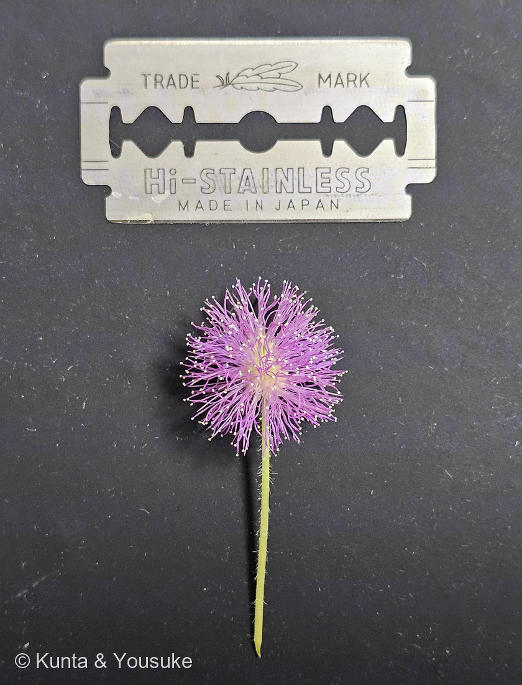
⑦ 刃とならべて（大きさを測るために） 🔍 押しているあいだ拡大して見られるよ。
⭐ ⑦ ものさしが写っていれば、測れる
夜、燻太さんが花をひとつ摘んで、両刃カミソリの刃とならべて撮ってくれた。⭐両刃の刃は規格品で、長さ43mm・幅22mm——つまり、写真のなかにものさしが入っている。
⭐ちょうど176 ミョウガで「ものさしが写っていないから測れない」と書いたばかりだったから、これはうれしい。
- まず、測っていいかを確かめた：写真の刃の縦横の比は約1.97。規格の 43÷22＝約1.96 とほぼ同じ＝刃は平らに置かれていて、カメラもほぼ真上。だからゆがみは小さい。
- ⭐雄しべの先から先までの差し渡し＝約20mm（2cm）。
- 中心の、淡いクリーム色のかたまり（小花が集まっている部分）＝約5〜6mm。
- 出典には「頭状花序は球形、直径約1cm（長さ1〜1.3cm、幅0.6〜1cm）」とある。⭐この「約1cm」を、雄しべを広げた差し渡しではなく“小花のかたまり”の寸法と読むと、うちの子の5〜6mmと、だいたい合う。⚠ただし出典は「雄しべを含む／含まない」を書いていない＝これはぼくの読みだよ。
- ⚠測るときのお断り：花は刃よりすこし厚みがあって、そのぶんレンズに近い＝ほんのわずか大きく写る。0.1mm単位の話はできない。
⭐⭐ 雄しべ4本、雌しべ1本 ── 数えられることが、この属の印（2026.07.30）
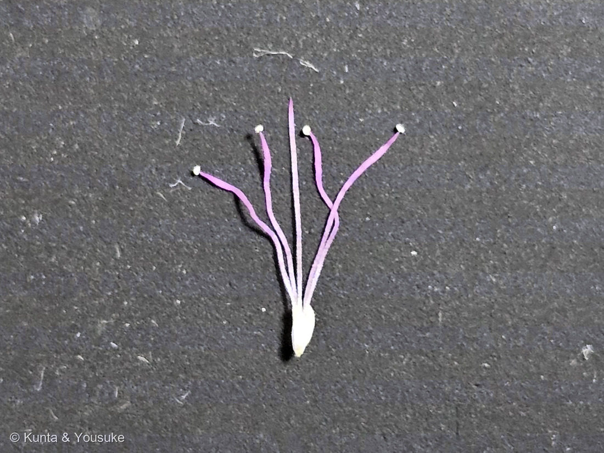
⑧ 小花をひとつ、ほどいてみた 🔍 押しているあいだ拡大して見られるよ。
同じ夜、燻太さんは頭花をさらにほどいて、小花をひとつだけ取り出した。そして数えてくれた——
⭐「雌しべが1本、雄しべが4本。」
⑧ 写真に写っているもの
- 紫の細い糸が4本。それぞれ先に白い粒（葯）＝雄しべ4本。
- まん中に、葯のない白い糸が1本、まっすぐ立っている＝雌しべの花柱。雄しべより長くのびているね。
- 下の白いつぼ＝花冠（花びらが筒になったもの）とみるのが自然だと思う。⭐理由＝雄しべも雌しべも、つぼの「同じ口」から束になって出ているから。もしこれが子房なら、花柱は子房の先から出るとしても、雄しべは子房の根もとのまわりから出るはずで、いっしょの口からは出てこない。
- ⚠でも、断定はしない。⭐顕微鏡で見れば決まるよ——花冠なら、口のふちが4つに裂けているはずだから。
⭐⭐ 「4」は、ただの数じゃなかった
出典を読んで、ぼく、びっくりしたんだ。燻太さんが数えた「4」は、この属を決めている形質そのものだった。
- オジギソウ属（Mimosa）の説明：「花は小さく…普通、4数性。…花弁は基部で合着する。雄しべ4または8本、離生、突き出る。」
- オジギソウ（M. pudica）の説明：「雄しべは4個、突き出る」「花冠は鐘形、長さ2〜2.3mm」。
- ⭐⭐くらべてみて：ネムノキ属は、同じネムノキ亜科で、ピンクのふわふわの正体が雄しべなのも同じ。なのに説明はこう——「雄しべは多数、下部で合着して、筒になり」「花冠は漏斗形、上部は5裂」。
- ⭐つまり、ネムノキのふわふわは数えられない（多数で、根もとがくっついて筒になっている）。オジギソウのふわふわは数えられる（4本か8本で、1本ずつ離れている）。
⭐⭐燻太さんが指でほどいて「4本」と言えたこと、それ自体が、この子がオジギソウ属だという証拠になっている。 - ⚠言いすぎないように書いておくね：ぼくが原文で確かめたのはオジギソウ属とネムノキ属の2つだけ。「ネムノキ亜科のなかで数の決まっている属はオジギソウ属だけ」とまでは言えないよ。
⭐ 数が合う ── 3つの測りかたの検算
写真⑧で、白いつぼの長さを1としたとき、花糸はおよそ3〜4倍。⭐つぼを花冠（2〜2.3mm）とすると、花糸は7〜9mmくらいになる。
そして写真⑦の頭花は半径10mm。中心の小花のかたまりが半径3mmほどだから、3 ＋ 7〜8 ＝ 10mm。
⭐⭐別々に測った数字が、ちゃんと合う。——出典の寸法も、頭花の差し渡しも、一輪の比も、同じ絵を描いているよ。
⭐ 同じマメ科の「球」なのに
007 シロツメクサも白い球状の頭花で、小さな花がたくさん集まっている。でも中身がまるでちがう。
シロツメクサの小花は蝶形花——旗弁・翼弁・竜骨弁のある、左右にしか対称でない花。オジギソウの小花は4数性の、放射相称の小さな鐘で、目立っているのは花びらじゃなく雄しべ。
⭐同じマメ科でも、虫に見せているものが「花びら」か「雄しべ」かで、こんなに顔が変わる。（この図鑑のマメ科6人のうち、ネムノキ亜科はオジギソウだけ。ほかはみんな蝶形花のなかまだよ。）
⭐172 アカバナユウゲショウのときは「4数性が、一枚の写真に全部写っていた」と書いたね。今度は一輪をほどいて、4を手で数えた。
🔬 次の宿題
- ⭐白いつぼの口が、4つに裂けているか（＝花冠かどうかの決着）。
- ⚠ひとつの頭花に、小花は何個あるか。⭐今日は写真⑦の白い葯を機械に数えさせてみたけれど——数えられなかった（印が葯でないところに付いて、本物を取りこぼした）。だから数は書かない。顕微鏡でなら、数えられるかもしれない。
- 🔬花粉：オジギソウの花粉は⭐4個ずつくっついた「四分子（tetrad）」で、発芽口がなく（無口粒）、大きさは10µmより小さい。⚠175 シソの腺鱗が68µmだったから、その7分の1以下。見つけるのは大変かもしれないけれど、⭐見えたらうれしいね。
──✅⭐⭐この宿題は、書いた次の日に果たされた（下の節へ）。「小さくて大変かも」は外れて、燻太さんは一発で当ててきたよ。
🔬⭐⭐ 花を、のぞく ── 葯と花糸と、柱頭と、花粉（2026.07.30 夜・顕微鏡）
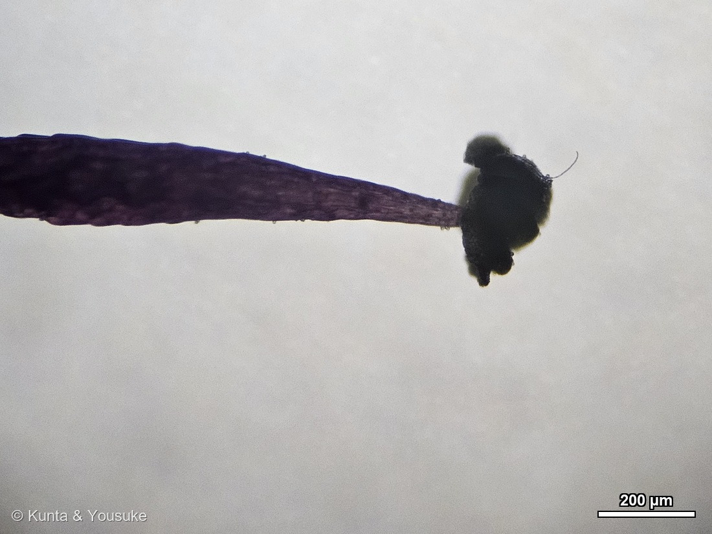
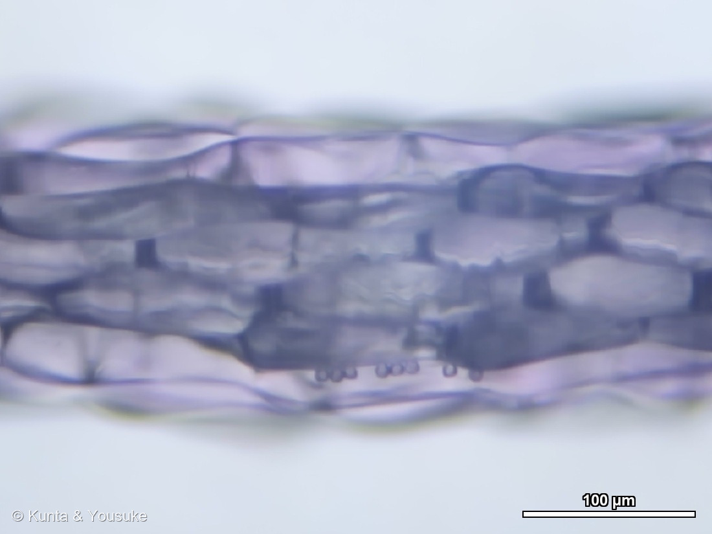
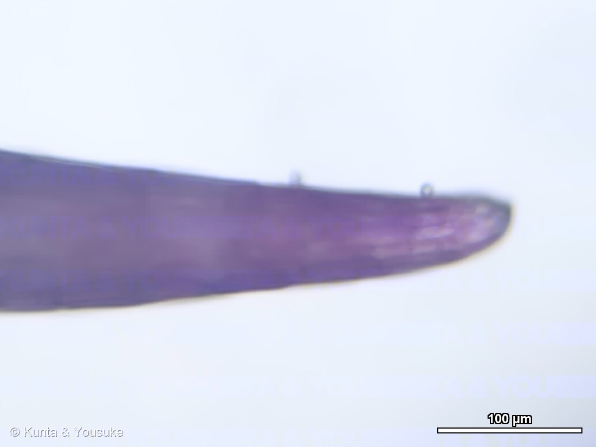
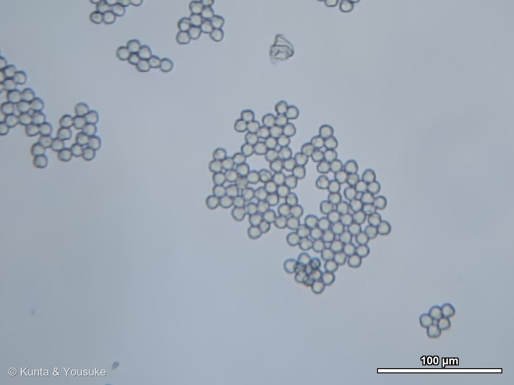
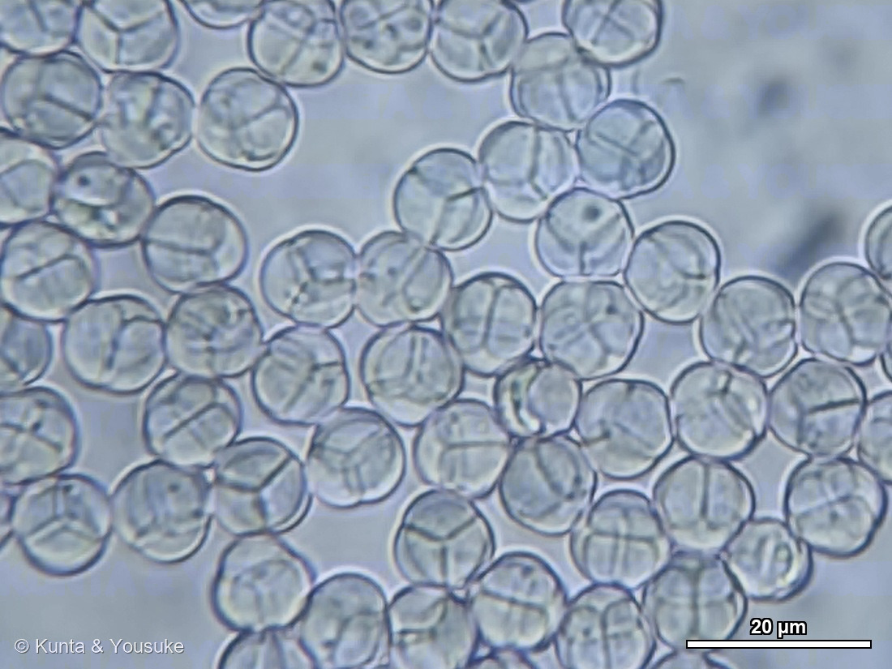
一輪をほどいて、のぞいた（写真⑨〜⑬・接眼25倍・スケールバー入り） 🔍 押しているあいだ拡大して見られるよ。
⑩ ⭐⭐ アメジストの正体 ── 色は「面」ではなく「細胞の集まり」
燻太さんの言葉は「アメジストみたいに美しい色合い」だった。⭐写真⑩が、その正体だよ。
- 細長い長方形の表皮細胞が、れんが積みのように並んでいる。そして⭐その一つひとつが、淡い紫に染まっている。
- ⭐⭐花の色は、絵の具を塗った面じゃない。色をもった細胞が、いくつも集まってできている。──遠くから見たピンクのふわふわは、この細胞の集まりが何百本ぶんも重なった色なんだ。
- ⚠ただし、この色素がアントシアニンかどうかは確かめていない。⭐確かめ方はある——アントシアニンなら液胞に溜まっていて、酸・アルカリで色が変わる。133 アジサイで書いた話だね。次の宿題にしよう。
⑪ ⭐⭐⭐ 燻太さんの疑問 ── 「柱頭の構造が、見当たらない」
燻太さんはこう書いてくれた。
「雌しべの先端は鋭く先細っているだけで、教科書のような柱頭の構造が見当たらない。ピントをずらしながら観察しても、細胞表面に花粉がついているだけみたい。」
⭐調べてみて、びっくりした。──その「見当たらない」が、正解だったんだ。
- 同じオジギソウ属の Mimosa caesalpiniifolia を調べた2024年の論文に、柱頭の記載がある——「semidry（半乾性）、punctiform（点状）、with a central hole（中央に穴がある）、cuticularized（クチクラ化した）」。⭐punctiform ＝ 点状。ふくらんだ頭も、いぼいぼの突起の絨毯も、はじめから無い。
- ⭐⭐そして論文の題は「exploring the lock-and-key mechanism（鍵と鍵穴のしくみを探る）」。──1つの複合花粉（polyad）に花粉8個／1つの柱頭に乗る複合花粉は1つだけ／子房の胚珠も8個。⭐花粉管がのびるのは、柱頭の穴が閉じて、複合花粉が分泌液に浸って水を吸ったあとだという。
- ⭐⭐⭐つまり、柱頭が小さいのは「足りない」のではなくて、花粉のかたまりを1つだけ受け取るための鍵穴だった。──燻太さんが「細胞表面についているだけ」と見たのも、そのとおり。⭐受け取る場所は、先端のたった一点だけなんだ。
- ⭐写真⑪をよく見て。上のふちに丸い粒が2つくっついている。⭐直径はスケールバーで測ると約10µm——⭐⭐写真⑬で測った四分子と、同じ大きさ。つまりあれは花粉で、受け取る場所ではない横腹に、ただ乗っているだけだよ。
⚠ ここからは、まだ言い切れないこと
- ⚠⚠その論文は Mimosa caesalpiniifolia で、うちの子は M. pudica。同じ属だけれど別の種だよ。
- ⭐⭐でも、うちの子で確かめられる予測がある。あちらは花粉8粒 ↔ 胚珠8個。うちの子の花粉は四分子＝4粒（写真⑬）。⭐もし同じしくみなら、うちの子の胚珠は4個くらいのはず。──三河のオジギソウの豆果の記載は、「3〜5個の1種子入りの分節からなり」。⭐4粒の花粉と、3〜5個の種。数が合う。
- ⚠合っているからといって、決まりではないよ。胚珠の数と、実って種になった数は別だし、実らなかったものもある。⭐ちゃんと確かめるなら、若い子房を切って胚珠を数える。
- ⭐いちばんの宿題＝対物40倍で、先端そのものを見ること。中央の穴は数µmだろうから、10倍で写らないのは当たり前なんだ。
- ⚠測るときのお断り：写真⑪の先端は画面の中心から離れた場所に写っていた。この接眼（25倍）は端ほど大きく写るので、バーの値より数%（およそ6%）大きく見えていると思ってね。⭐次からは、測りたいものを画面の真ん中に持ってこよう。
⑫⑬ 花粉 ── 四分子、約10µm。別々の倍率で、同じ数字が出た
- ⭐写真⑬（40倍）：丸い粒の内側に仕切りの線が入っている。⭐Y字に見えるもの＝四面体にくっついた4粒を「極」から見た姿（手前に3粒、奥に1粒）。十字や平行線に見えるのは、横から見たときだよ。
- ⭐⭐大きさ＝四分子ぜんたいで約9.8µm（40倍で実測）／約10.3µm（10倍で実測）。別々の倍率で測って、同じ数字が出た。⭐中の1粒は約5.7µm。
- ⭐PalDatの記載は「四分子・無口粒・10µmより小さい」。──ぴったり合っている。
- ⭐写真⑫（10倍）：四分子はばらばらに散らばらず、数十個ずつ房のようにまとまっている。⭐「4粒でひとかたまり」の、さらに上の集まりだね。⚠何がくっつけているのか（油や粘りか）は、この写真からは分からない。
⑨ 葯 ── 仕事を終えた姿
写真⑨は雄しべ1本まるごと。細長い花糸の先に、黒っぽくしぼんだ葯がついている。⭐もう花粉を出したあとの姿だと思う。──写真⑧で見た「白い葯」は開く前で、こちらは開いたあと。⚠裂け目（開いた口）がどこにあるかは、この倍率では読みとれなかった。
顕微鏡：接眼25倍・対物4/10/40倍・スマホMF=1固定（較正プロファイル ep25x_MF1）。⚠この接眼は端ほど大きく写るので、画面の中心を切り出して使っているよ。原本は 植物図鑑\顕微鏡観察\009_オジギソウ\。
⭐⭐⭐⭐ 観察メモ⑤ 屋外で育った子 ── 濃い緑と、赤い茎（2026.08.08・広島市植物公園）
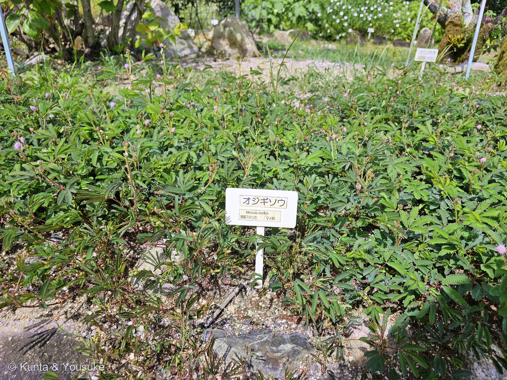
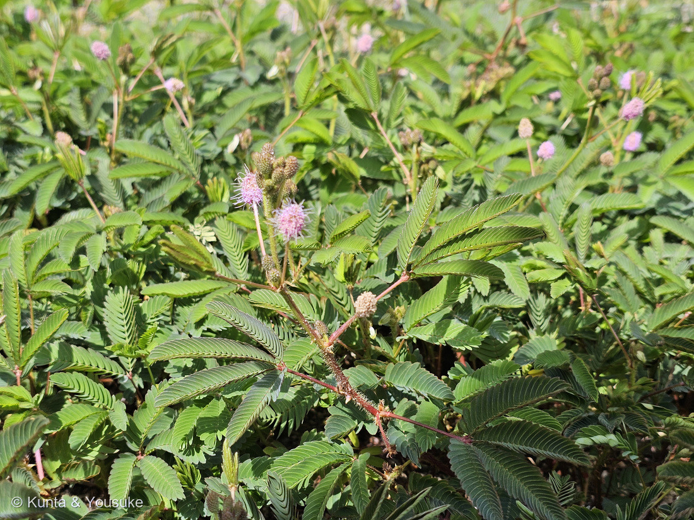
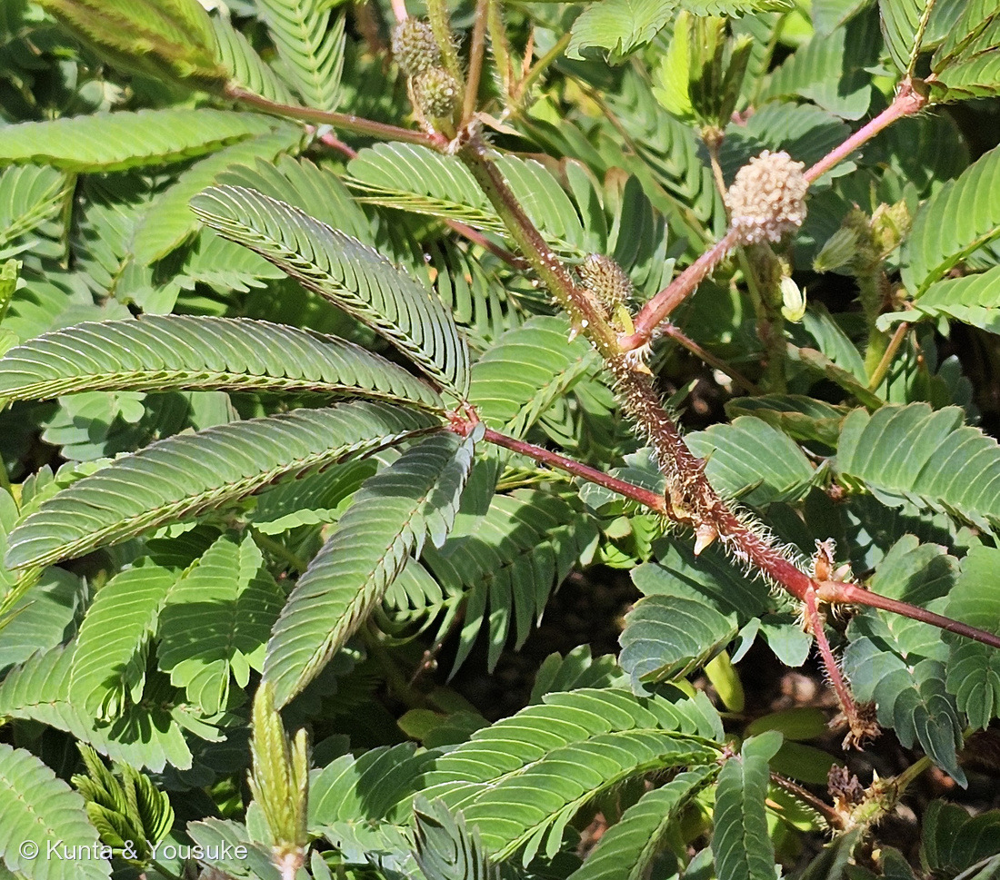
⭐ ボタンで切りかえてね。⭐⭐⑯がこの回のいちばんの一枚——あずき色の茎、下向きのトゲ、そして羽片が4枚ひらいた葉が、いちどに写っているよ。
燻太さんの一言「やっぱり屋外で育っている子達は、みどりがこくて葉柄や茎も赤色だね。いまおうちにいるオジギソウは、昔一度だけベランダに出してみたけど、直ぐに萎れ始めたから、急いで屋内に戻してからはずっと屋内育ち。」
⭐ そもそも、この子は「日なたの草」なんだ。
- ⭐⭐英語版Wikipediaは、はっきり「shade intolerant and frost-sensitive（日かげに耐えず、霜に弱い）」と書いている。⭐好むのは日なたで、「disrupted soil（かき乱された土）」や水はけのよいやせ地に、まっさきに生えてくる草。
- ⭐写真⑭の花壇は、砂利まじりの明るい一角。⭐⭐そこに一面びっしり広がっている——これがこの子のほんらいの暮らしに近い姿だと思う。
⭐⭐⭐ 赤いのは、たぶん「日よけ」。
- ⭐赤い色素はアントシアニンのなかま。——Gould（2004）はこう書いている＝「By absorbing high-energy quanta, anthocyanic cell vacuoles both protect chloroplasts from the photoinhibitory and photooxidative effects of strong light（高いエネルギーの光を吸うことで、アントシアニンを含む液胞は、強い光による光阻害と光酸化から葉緑体を守る）」＋「efficiently scavenging free radicals and reactive oxygen species（活性酸素をうまく捕まえる）」。
- ⭐⭐⭐つまり赤は、強い光のもとでいる色。——⭐屋内のやわらかい光では、作らなくても困らない。⭐⭐だからうちの子は緑のまま、園の子は茎まで赤い（⚠この株の色素を確かめたわけではないから、ぼくの読みだよ）。
- ⭐じつは009には、もうひとつアントシアニンの宿題があった＝「花糸のピンクはアントシアニンか（酸とアルカリで色が変わるか）」。⭐⭐茎の赤も、同じ手で確かめられるよ。
⚠ 「緑が濃い」のほうは、慎重にしておくね。
- ⚠写真の色の濃さは、光の当たりかたと露出でも変わってしまう。⭐だからここは「濃く見える」までにしておく（087 ヤマモモで決めた「雰囲気は数字に翻訳してから出典と突き合わせる」の、翻訳しきれなかった側だね）。
- ⭐確かめる手はあるよ。——①同じ日・同じ時刻に、うちの子と外の子を同じ白い紙を背景に並べて撮る／②指でつまんで葉の厚みをくらべる（外の子のほうが厚いはず）。
⭐⭐⭐⭐ 「ベランダに出したらすぐ萎れた」の答え ── 順化（hardening off）。
- ⭐⭐これは株が弱いのではなくて、体がまだ外向きになっていなかったんだ。——英国王立園芸協会（RHS）は、屋内や温室で育てた植物を外に出すときの手順を「hardening off（順化）」と呼び、「Gradually acclimatising tender or indoor-raised plants to outdoor conditions, to toughen them up and prevent a check in growth（弱い植物や屋内で育てた植物を、少しずつ外の環境に慣らして、丈夫にし、生育がつまずくのを防ぐこと）」と説明している。
- ⭐⭐⭐そして、いきなり出すとどうなるか。——「the shock can severely check a plant's growth（そのショックで生育がひどくつまずくことがある）」。⭐順化のあいだに植物の体は「thicken and alter the plant's leaf structure and increase leaf waxiness（葉のつくりが厚く変わり、表面のろうが増える）」＝⭐⭐屋内の子の葉はうすくて、ろうが少ない。だから光と風と乾きに追いつけずに、すぐ萎れる。
- ⭐やりかたは「2〜3週間かけて、少しずつ」（同「takes two to three weeks」）。⭐日かげ→半日陰→朝の日ざしだけ、と段階を踏んで、夜は中に入れる。⚠始めるのはくもりの日から。
- ⭐⭐だから、燻太さんが「急いで屋内に戻した」のは、正しい判断だったと思う。⭐もう一度ためすなら、いまの季節に、くもりの日から、ゆっくりね。⚠そして霜には出せない（frost-sensitive）から、外に置けるのは暖かいあいだだけだよ。
⭐⭐⭐ おまけの発見その一 ── 羽片は、やっぱり4枚だった。
- ⭐上の「観察メモ④ 羽片は何枚？」の宿題に、手がかりがひとつ増えたよ。——⭐⭐この花壇は、日あたりも場所も水もたっぷりの、いちばん元気に育つ条件。⭐もし「よく育つと羽片が増える」なら、ここは5枚が出やすいはず。
- ⭐⭐⭐でも、ぼくが写真①〜③ではっきり数えられた葉は、10枚以上ぜんぶ4枚（2対）だった。⭐写真⑯の左の葉が、いちばん数えやすいよ——葉柄の先の一点から、手のひらのように4枚。
- ⭐出典どおりでもある＝英語版Wikipedia「one or two pairs of pinnae（羽片は1対か2対）」／EAfrinet「ふつう2対、まれに1対」。
- ⭐⭐だから「よく育てば5枚になる」とは、かんたんには言えなくなった。⚠栄養・環境の仮説が外れた、とまでは言えないよ（この園の株とお店の株は、そもそも別の種から育っているかもしれない）。⭐でも「別の種子ロット／産地のちがい」という候補が、少し強くなったと思う（⚠ぼくの読み）。
- ⏳次の一手は変わらないよ＝⭐うちの子で、下の節から上の節まで葉ごとに数える。⭐なだらかに増えるなら発生・可塑性、ある節から上だけ全部5枚ならセクター（変異）。⭐⭐これ一発で、仮説が割れる。
⭐⭐ おまけの発見その二 ── トゲと、若い莢。
- ⭐写真⑯の茎に、下向きの鋭いトゲと長い剛毛がはっきり写っている。——英語版Wikipediaも「slender, branching, and sparsely to densely prickly（細く、枝分かれし、まばらから密にトゲがある）」「The petioles are also prickly（葉柄にもトゲがある）」と書いている。⭐うちの子の茎も、そっとなでるとざらざらするでしょう。
- ⭐⭐そして、茎のわきのとげとげした細長い束——⭐これは若い莢（さや）の束だと思う（⚠ぼくの読み）。英語版Wikipediaは実を「clusters of prickly pods 1–2 cm long that break into two to five segments（1〜2cmのトゲのある莢が房になり、2〜5個の分節に割れる）」と書いている。⭐まるい玉のほうは、つぼみか咲きおわった頭花だよ。
- ⭐⭐⭐これ、009の宿題(4)「若い子房を切って胚珠を数える＝四分子4粒と数が合うか」の相手なんだ。——⭐「2〜5個の分節」と「花粉4粒」。⏳うちの子に実がついたら、数えてみようね。
参考：Kew POWO「Mimosa pudica」／EAfrinet factsheet（羽片はふつう2対、まれに1対、掌状）、TALE and Shape: How to Make a Leaf Different（Plants 2013）（KNOXIが複葉の複雑さを上げ、GAが下げる）、How Do Plants and Phytohormones Accomplish Heterophylly（Front. Plant Sci. 2017）（光・温度・養分など環境による葉形の可塑性／miR156–SPLによる節位依存の変化）、三河の植物観察「オジギソウ」（雄しべは4個、突き出る／花冠は鐘形・長さ2〜2.3mm／頭状花序は球形・直径約1cm（長さ1〜1.3cm、幅0.6〜1cm）／属の解説＝普通4数性・花弁は基部で合着・雄しべ4または8本、離生、突き出る）、同「ネムノキ」（ネムノキ属＝雄しべは多数、下部で合着して筒になる／花冠は漏斗形、上部は5裂）、PalDat「Mimosa pudica」（花粉は四分子（tetrad）・無口粒（inaperturate）・10µm未満）、Morphological insights into the pollen–stigma interaction in Mimosa caesalpiniifolia Benth.: exploring the lock-and-key mechanism（Brazilian Journal of Botany 47: 1039, 2024）（⚠別種／柱頭は semidry・punctiform・中央に穴・クチクラ化／複合花粉は8粒で、1つの柱頭に1つだけ乗り、胚珠も8個／花粉管は柱頭の穴が閉じて分泌液に浸ってからのびる）。
観察メモ⑤（2026.08.10 追記）＝Wikipedia (English)・Mimosa pudica（slender, branching, and sparsely to densely prickly／The petioles are also prickly／one or two pairs of pinnae／10–26 leaflets per pinna／clusters of prickly pods 1–2 cm long that break into two to five segments／shade intolerant and frost-sensitive／disrupted soil）、Gould KS (2004) Nature's Swiss Army Knife: The Diverse Protective Roles of Anthocyanins in Leaves. J Biomed Biotechnol 2004(5):314-320（By absorbing high-energy quanta, anthocyanic cell vacuoles both protect chloroplasts from the photoinhibitory and photooxidative effects of strong light／efficiently scavenging free radicals and reactive oxygen species）、RHS・Hardening off tender plants（Gradually acclimatising tender or indoor-raised plants to outdoor conditions, to toughen them up and prevent a check in growth／takes two to three weeks／the shock can severely check a plant's growth／thicken and alter the plant's leaf structure and increase leaf waxiness）、⭐広島市植物公園の名札「オジギソウ／Mimosa pudica／熱帯アメリカ／マメ科」（⚠名札の寄りの1枚は公開せず、出典として引くだけにしてある）
育て方＝Gardenia／UK Houseplants
花言葉
- 日本で
- 繊細な感情／感受性／敏感、そして謙虚。
- 英語圏
- Sensitiveness.（敏感さ）Greenaway 1884 の項目名は「Mimosa (Sensitive Plant)」＝この子そのもの
なぜ、そうなったか：この子の花言葉には、想像で足された部分がほとんどない。ぜんぶ「葉が動く」ことから来ている。さわると葉枕（pulvinus）が水（膨圧）を失って葉が折れる——だから「敏感」。葉柄が下がって、おじぎをするように見える——だから「謙虚」。
おもしろいのは、学名も同じところから来ていること。pudica＝ラテン語で「恥じらう・慎み深い」。植物学者と、19世紀に花言葉をつけた人は、まったく同じひとつのしぐさを見ていて、それぞれの言葉で名づけた。「謙虚」と「恥じらう」は、ここで出会っている。
参考：Kate Greenaway Language of Flowers(1884)・Project Gutenberg／花言葉-由来／LOVEGREEN